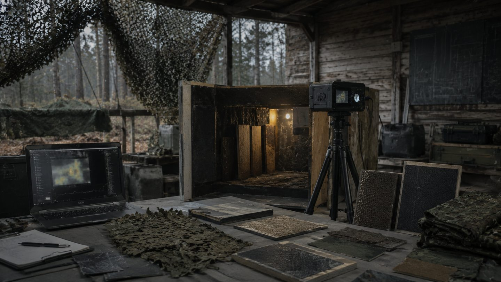

URCE
Human-worn passive signature conditioning intended to disrupt stable thermal contour at source.
CONDITION
MILLARES — PROTECTIVE ENGINEERING / TERCIO
A passive-first, modular survivability architecture for dismounted teams facing thermal ISR, FPV and fibre-optic FPV pressure.
Seven systems. One coordinated architecture.
MCS coordinates across all seven — it is not an eighth system.
01 / THE OPERATIONAL GAP
Thermal surveillance, short-range FPV attack and fibre-optic control compress the time available to dismounted teams while reducing the usefulness of RF-only detection and jamming.
Many counter-UAS solutions remain too centralized, too active or too expensive to be carried, dispersed and lost at the tactical edge. TERCIO addresses that gap through layered, standalone-capable functions rather than one mandatory sensor, network or interceptor.
02 / TERCIO
TERCIO is a seven-system passive-first survivability architecture. Each system provides bounded value on its own and carries equal architectural standing. Integration is intended to improve effectiveness, but no single system is a mandatory point of failure; Mission Coordination Services connect the seven rather than sitting above them.
Human-worn passive signature conditioning intended to disrupt stable thermal contour at source.
CONDITIONAlways-on, non-powered position signature management. GADIR-TB is a candidate demonstrator pathway; a separate research track carries no protection credit yet.
CONCEALLocal and cooperative early warning using complementary sensing, with useful local behaviour if disconnected.
DETECTAttritable forward, remote or mobile nodes that extend sensing/communications geometry and host mission-kit modules for other TERCIO systems, which retain ownership of their hosted function.
EXTEND · HOSTCoordinated deception and perception shaping that creates false signatures, alternate cues and ambiguity before target commitment.
DECEIVEPartner-led concept for stand-off interception and denial. Architecture and interfaces only — not built, tested, fielded or authorised for autonomous or explosive weapon release.
INTERCEPT · DENYFeasibility-led concept for individual terminal survival. No guarantee of survival, automatic activation authority or demonstrated terminal protection is claimed at this stage.
TERMINAL DEFENCEMission Coordination Services (MCS) are distributed logical coordination, authority, deconfliction and outcome services that operate across all seven systems. MCS is not an eighth system, not an independent engagement system and not a mandatory central command post.
03 / DEMONSTRATOR PATHWAYS
Each TERCIO capability can mature through a bounded candidate MVP with a defined question, entry condition and evidence route. The cards below show the first practical demonstrator for each capability and the principal follow-on steps.
A successful MVP matures only the demonstrated function. It does not validate the complete subsystem or the integrated TERCIO architecture.

Compare candidate textile structures and surface treatments against a baseline garment under controlled LWIR, comfort and durability conditions.
ENTRY CONDITIONQualified textile/material partner, controlled LWIR access and an agreed human-factors plan.Compare passive materials, standoff, air-gap and ventilation arrangements against uncovered and baseline-camouflage controls.
ENTRY CONDITIONMaterials/structures partner, controlled LWIR test access and an agreed reference configuration.Test one agreed threat set with a deliberately narrow sensor combination, local processing and a human-centred alert.
ENTRY CONDITIONUser-defined threat set, sensor/BOM trade, representative data or test access and an agreed nuisance-alert criterion.Demonstrate one forward, remote or mobile configuration focused on displaced sensing, relay or hosting one bounded mission-kit module owned by another TERCIO system.
ENTRY CONDITIONAgreed mission configuration, stable interfaces, mounting concept and a measurable geometry or hosting question.Compare baseline observation with one controlled false or alternate signature and measure its effect on attention, classification or aim-point selection.
ENTRY CONDITIONApproved test authority, agreed observation method, safety review, controlled cueing source and independent assessment.The next MVP is chosen by partner capability, operational relevance, testability, safety and evidence value — not by a fixed public roadmap.
CID is a partner-led interception/denial concept and ADARGA is a feasibility-led terminal-survival concept. No system in TERCIO currently has a programme-committed public demonstrator pathway; see each system page for current architecture, interfaces and development posture. Candidate MVP/demonstrator opportunities across all seven systems carry equal default priority at this stage.
04 / EVIDENCE DISCIPLINE
TERCIO is not combat-proven, fielded, manufactured or validated. No detection range, warning time, thermal-contrast reduction, casualty reduction or unit-cost figure is claimed.
05 / IP & TRANSFER FRAMEWORK
Indicative partnership framework — final programme route, workshare, rights and transfer terms remain subject to due diligence and written agreement.
ÍBERA background IP remains protected. Qualified partners receive the rights required for the agreed evaluation and test scope.
Foreground IP, technical authority, workshare, cost share and manufacturing rights are defined according to actual contribution and programme route.
Ukraine-first production, licence, assignment or transfer terms are established through a definitive written agreement.
No third-party dependency has been identified in the present concept baseline. Formal prior-art, freedom-to-operate, export-control and contractual reviews remain pending.
NDA · evaluation agreement · memorandum of understanding · workshare agreement · definitive licence or transfer agreement.
06 / PARTNER WITH US
CURRENT ASKWe are seeking qualified French–Ukrainian partners able to convert one bounded TERCIO hypothesis into credible evidence and a viable route to Ukrainian-led validation and production.
Request a 20-minute triage callTextiles, coatings, deployable structures and repairable field assemblies.
LWIR, acoustic, RF, EO or mixed-sensor test design and instrumentation.
Operational advice, manufacturing feedback and legitimate adoption pathway.
French legal applicant, AID / BRAVE France route or qualified Ukrainian BRAVE1 partner.
07 / ABOUT ÍBERA SYSTEMS
ÍBERA Systems is an independent Toulouse-based defence innovation venture focused on passive-first, modular and cost-asymmetric survivability concepts for the tactical edge. ÍBERA Systems is transitioning its public identity toward the MILLARES name; ÍBERA Systems remains the current point of legal and historical record pending final identity authority.
TERCIO is led by Francisco Javier Fernández Plaza, an aerospace and defence programme manager with more than 20 years of experience across multinational European programmes and industry.